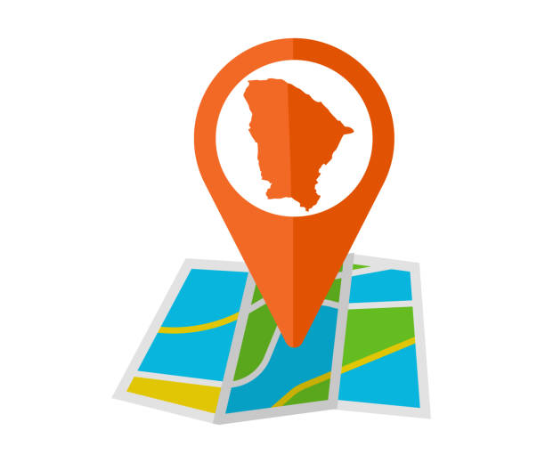
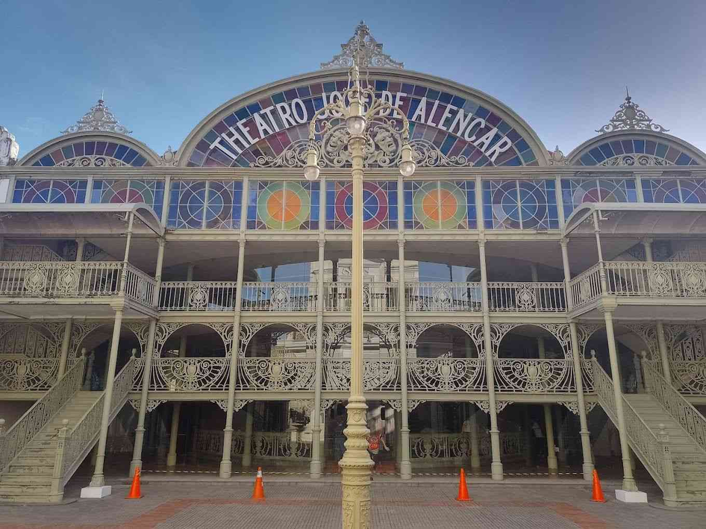

Fortaleza Chamber of Commerce
Home
Discover
Directory
Join
🌑
Message Visit Here
Image Gallery
Centro Dragão do Mar de Arte e Cultura
Mercado Central de Fortaleza
Theatro José de Alencar

Fortaleza Beach Park
Arena Castelão
Centro de Turismo do Ceará